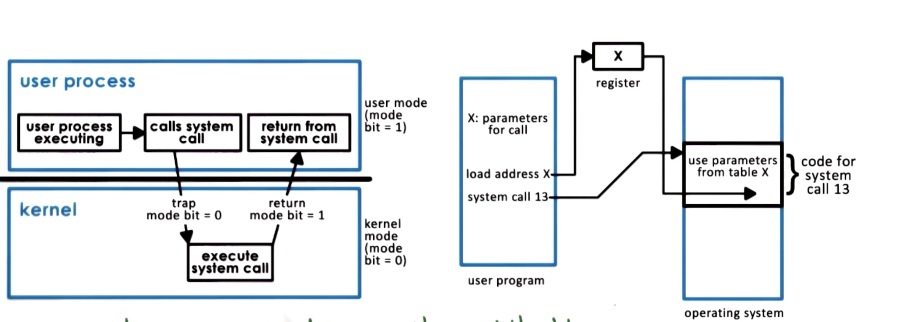
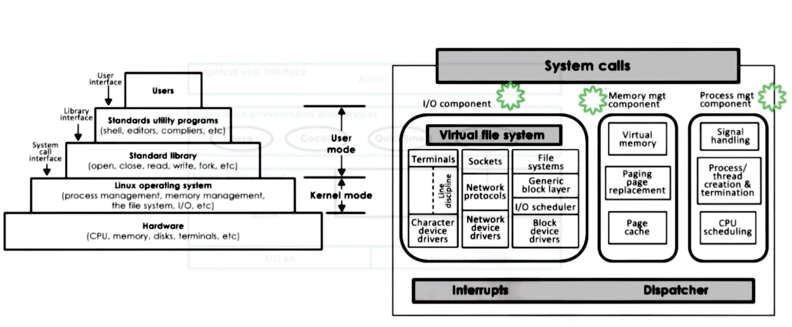
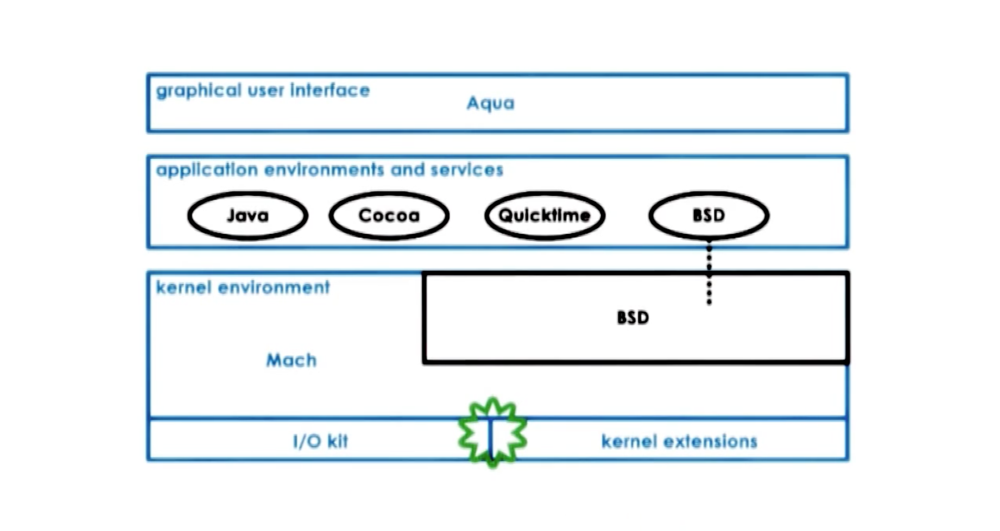

Introduction to Operating Systems
- Topics to be covered in this lesson:
- What is an OS (operating system)?
- What are key components of an OS?
- Design and implementation considerations of OSs
What is an Operating System?
- An OS is a special piece of software that abstracts and arbitrates the use of a computer system
- An OS is like a toy shop manager in that an OS:
- Directs operational resources
- Enforces working policies
- Mitigates difficulty of complex tasks
- By definition, an OS is a layer of systems software that:
- Directly has privileged access to the underlying hardware
- Hides the hardware complexity
- Manages hardware on behalf of one of more applications according to some predefined polices
- In addition, it ensures that applications are isolated and protected from one another
OS Elements
- Abstractions:
- Process, thread, file, socket, memory page
- Mechanisms
- Create, schedule, open, write, allocate
- Policies
- Least recently used (LRU), earliest deadline first (EDF)
Design Principles
- Separation of mechanisms to policy:
- Implement flexible mechanisms to support many policies
- Optimize for common case:
- Where will the OS be used?
- What will the user want to execute on that machine?
- What are the workload requirements?
OS Protection Boundary
- Generally, applications operate in unprivileged mode (user level) while operating systems operate in privileged mode (kernel level)
- Kernel level software is able to access hardware directly
- User-kernel switch is supported by hardware
- trap instructions
- system call(open send malloc …)
- signals
Crossing The OS Boundary

System Call
- Applications will need to utilize user-kernel transitions which is accomplished by hardware, this involves a number of instructions and switches locality
- Switching locality will affect hardware cache (transitions are costly)
- Hardware will set _traps_ on illegal instructions and os can check what cause the trap
- Cache
- Because context switches will swap the data/addresses currently in cache, the performance of applications can benefit or suffer based on how a context switch changes what is in cache at the time they are accessing it.
- A cache would be considered hot (fire) if an application is accessing the cache when it contains the data/addresses it needs.
- Likewise, a cache would be considered cold (ice) if an application is accessing the cache when it does not contain the data/addresses it needs — forcing it to retrieve data/addresses from main memory.
OS Services
An operating system provide applications with access to the underlying hardware by exporting a number of services. Thses services are directly linked to some of the components of the hardware.
- process management
- file management
- device management
- memory management
- storage management
- security management
Monolithic OS
- Pros:
- Everything included
- Inlining, compile-time optimizations
- Cons:
- Customization, portability, manageability
- Memory footprint
- Performance
Modular OS
- Pros:
- Maintainability
- Smaller footprint
- Less resource needs
- Cons:
- Indirection can impact performance
- Maintenance can still be an issue
Microkernel
- Pros:
- Size
- Verifiability
- Cons:
- Portability
- Complexity of software development
- Cost of user/kernel crossing
Operating System Architecture
Linux

Linux Architecture
MacOS

Macos Architecture
Quiz
Quiz 1: Operating Systems Components
Which of the following are likely components of an operating system?
A:
file system (hides hardware complexity), device driver (makes decisions), scheduler (distributes processes).
Quiz 2: Operating Systems Components
For the following options, indicate if they are examples of abstraction or arbitration.
A:
- Distributing memory between multiple processes (arbitration)
- Supporting different types of speakers (abstraction)
- Interchangeable access of hard disk or SSD (abstraction)
# Quiz 3: System Calls
On a 64-bit Linux-based OS, which system call is used to:
- Send a signal to a process?
- Set the group identity of a process?
- Mount a file system?
- Read/write system parameters
A:
The answers are respectively,
killsetgidmountsysctl